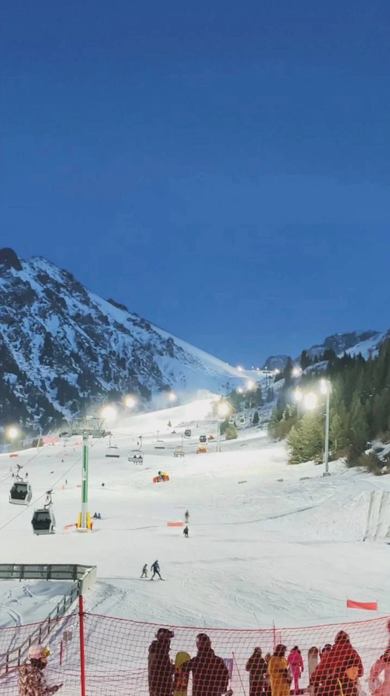

02 / ЗАЛ↗
Ещё один подход.
Хожу в зал. Между баскетболом, горами
и всем остальным — время на тренировку.

Мне 17. Я из Астаны, а теперь живу в Алматы — здесь мои родные и горы.
Моя историяМне 17. Я из Астаны,
но теперь мой дом — Алматы.
Почему уехал? Как по мне, в Астане делать нечего. А в Алматы я и так приезжал каждое лето: здесь все мои родственники.
Сейчас живу у бабушки с дедушкой. Рядом свои люди, горы и совсем другой ритм. Осталось только найти время на всё, что люблю.

Сноуборд, снег и склон перед тобой.
За это я и люблю зиму.
Зима всегда была любимым временем года.
С переездом в Алматы к ней добавились горы.
Ну, разве что
когда запускаю Доту.
Баскетбол со мной ещё со школы, примерно с 5–7 класса. Люблю этот момент: прыжок, бросок — и всё внимание только на кольце.
Хожу в зал. Между баскетболом, горами
и всем остальным — время на тренировку.
Из компьютерных игр больше всего люблю Dota 2. Иногда сменить площадку на катку — тоже хороший план.
Нажми на фото, чтобы открыть оригинал.